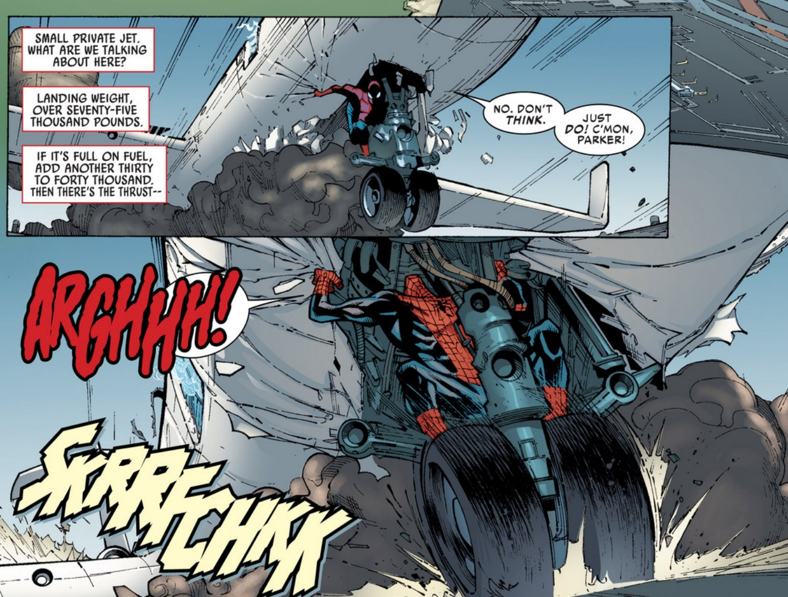
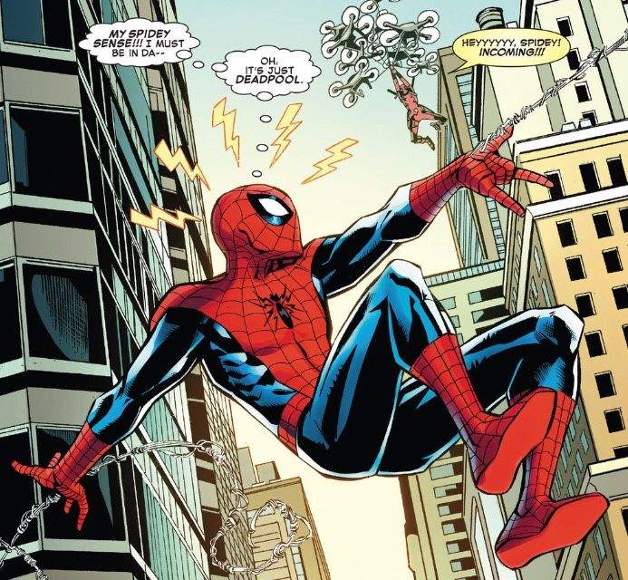
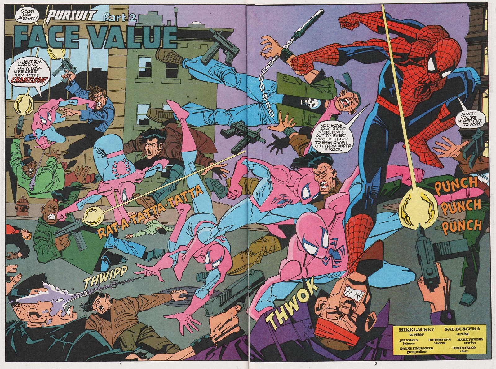
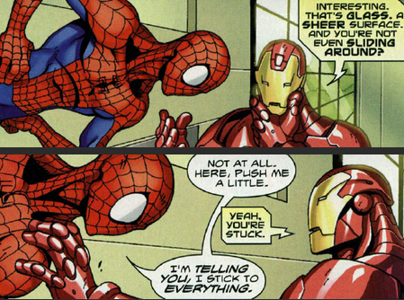
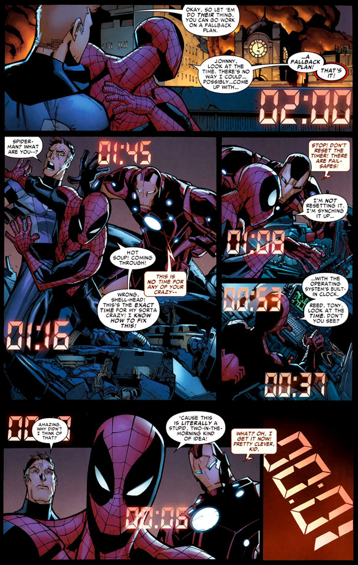

Sức mạnh
Spiderman có thể là một chàng trai trẻ nhưng sức mạnh của cậu thì có thể sánh ngang với những đối thủ kì cựu nhất trong vũ trụ Marvel. Đây là những điều mà anh hàng xóm thân thiện này có thể làm được: (Spiderman cũng có rất nhiều khả năng khác và đang dần được bộc lộ theo thời gian.)
-

Siêu cường
Sức mạnh vật lý của Spiderman chỉ đứng sau những bức tường kinh khủng như Hulk, Thor, The Thing, Jugernaut và Colosus.
-

Giác quan nhện
Spider-sense của Peter cho phép cậu có khả năng phản xạ cực nhanh trước tình huống. Thậm chí còn có thể tiên đoán được những đòn đánh mà đối thủ còn chưa kịp tung ra.
-

Linh hoạt
Sự dẻo dại, tốc độ và khả năng di chuyển của Spiderman khiến kẻ thù khó mà bắt được khi giao chiến. Đó là chưa kể tới sức bền rất tốt của cậu, bất cứ kẻ nào muốn đấu đến khi Spiderman mệt lả đều phải chuẩn bị rất kĩ mới có thể làm được điều đó.
-

Khả năng bám dính
Với khả năng bám sát và đi lại trên mọi bề mặt, Spiderman luôn có lợi thế khi chiến đấu trên mọi địa hình.
-

Trí tuệ
Peter thực chất là một thiên tài tẻ tuổi và có IQ xứng tầm với những người thông minh nhất địa cầu (Tony Stark, Reed Richard, Black Panther...)
Reed Richards từng nhận xét rằng ở độ tuổi hiện tại Peter đã có trí tuệ ngang ông bây giờ và khi đạt tới độ tuổi của ông, trí tuệ của cậu còn có thể vượt xa hơn nữa.
Điểm yếu
Spidersense là vũ khí mạnh nhất của Peter, nhưng nó cũng là điểm yếu khá lớn. Vì phải dựa vào nó khá nhiều trong cận chiến, chỉ cần gặp kẻ có thể chống lại nó, Peter sẽ gặp khó khăn khá lớn. Giác quan nhện của anh có thể bị ngăn chặn bởi nhiều cách khác nhau như sử dụng kĩ thuật Telepathy cao cấp. Những người như Professor X, Emma Frost hay Jean Grey đều có thể khiến Spiderman nằm sấp trước khi kịp giơ tay lên bắn tơ.
Ngoài ra còn một số kẻ có khả năng kháng lại Spidersense cũng có thể hoàn toàn khống chế Peter. Những kẻ này có thể là các người nhện khác - Ben Reilly, Kaine Parker, Miles Morales... Hoặc họ cũng có thể là những người sở hữu các Symbiote như Venom (Flash Thompson, Eddie Brock), Anti-Venom, Carnage và Hybrid...
Bên cạnh đó, sức mạnh của Peter chủ yếu phụ thuộc vào sự tiếp cận và khả năng cận chiến. Một kẻ có khả năng điều khiển vật chất xung quanh như Magneto, Jean Grey... sẽ rất an toàn trước các đòn đánh của Spiderman.
Spiderman cũng không thực sự là một đối thủ tầm cỡ. Với những nhân vật có sức mạnh lớn hơn như các Mutant cấp Omega trở lên, Spiderman hoàn toàn lép vế và sẽ dễ dàng bị đánh bại. Ví dụ: Mathew Malloy có thể khiến sự tồn tại của Peter biến mất và đó sẽ là cuộc chiến chưa đầy 1 tích tắc.